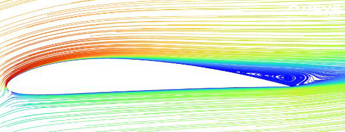
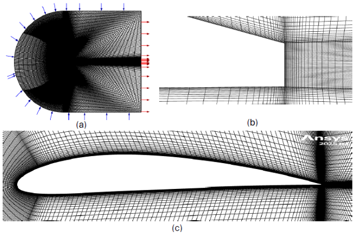
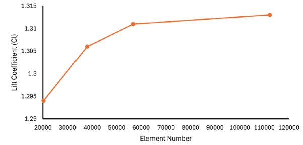
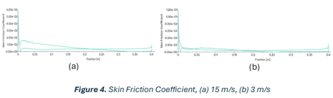
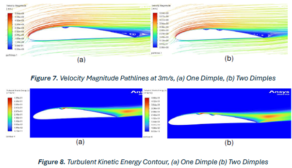

Urban wind environments present a challenging operating regime for vertical axis wind turbines (VAWTs) — lower mean wind speeds, higher turbulence intensity, and continuously varying angle of attack across each rotation. The aerodynamic performance of the blade section is therefore critical to overall energy capture.
This study used CFD to assess the baseline NACA 4412 airfoil at two representative urban wind speeds (3 m/s and 15 m/s) at a fixed 10° angle of attack, then designed and evaluated a suction-side dimple modification intended to improve low-Reynolds-number performance through boundary layer energisation.

A structured multiblock C-grid domain was generated in ANSYS ICEM CFD, extending 20 chord lengths upstream, 30 downstream, and 20 perpendicular — keeping blockage below 3%. An O-grid around the airfoil ensured orthogonal cells for accurate boundary layer resolution at high-curvature regions.
First cell height was targeted at \(y^+ \approx 1\) to resolve the viscous sublayer directly, with refinement concentrated at the leading/trailing edges, suction surface, and wake. Mesh quality metrics (skewness, determinant, angle) were verified against ICEM best-practice thresholds.
Simulations used a steady, 2D, incompressible pressure-based solver in ANSYS Fluent with the k-ω SST turbulence model, second-order upwind discretisation, and a coupled pseudo-transient formulation. Convergence was confirmed via residuals, mass imbalance, and force stabilisation.
A four-level mesh independence study at 15 m/s confirmed smooth convergence of both \(C_L\) and \(C_D\), with changes between the medium and fine grids below 1% for both coefficients.
Grid Convergence Index (GCI) analysis using Richardson extrapolation quantified discretisation uncertainty at under 1% for lift and under 2% for drag on the selected medium mesh (38,016 cells), balancing accuracy against computational cost.
The model was validated against published wind tunnel data for the NACA 4412 at a comparable Reynolds number, showing lift agreement within 20% and profile drag within 14% relative to wake-rake measurements — reasonable confidence given the fully turbulent modelling assumption.


The baseline NACA 4412 showed the expected cambered-airfoil pressure distribution — leading-edge stagnation, suction peak, and pressure recovery — confirming the simulation captured fundamental lift-producing physics.
At 15 m/s, flow remained attached over most of the suction surface with separation delayed toward the trailing edge, yielding \(C_L/C_D = 49.5\). At 3 m/s, earlier separation (around 55% chord) increased drag and reduced efficiency to \(C_L/C_D = 28.9\), consistent with low-Reynolds-number separation losses.
Skin friction coefficient distributions confirmed separation location, with \(C_f \to 0\) marking the onset of separated flow — earlier at low Re, later at high Re, matching published experimental trends.
Two dimple configurations (single and double, placed upstream of the expected separation point per literature guidance) were simulated with locally refined meshes around the features.
Contrary to the design objective, both configurations increased drag and slightly reduced lift compared to the baseline at both wind speeds — the two-dimple case showing a larger penalty than the single-dimple case.
Post-processing revealed the dimples generated local turbulence confined within the cavity rather than energising the downstream boundary layer. This is consistent with known limitations of 2D steady RANS in capturing the 3D vortex structures that drive dimple effectiveness in higher-fidelity studies.
The negative result is still practically valuable — it demonstrates that passive flow control concepts are highly sensitive to Reynolds number, boundary layer state, and design parameters, and would require case-specific optimisation and higher-fidelity modelling before VAWT deployment.

This study established a numerically credible baseline for the NACA 4412 in an urban VAWT context, quantifying the Reynolds-number-driven performance degradation relevant to real operating conditions.
The dimple modification did not achieve its intended performance improvement under the tested conditions, but the rigorous mesh independence, validation, and flow-physics analysis provide a solid foundation for future passive flow control work on VAWT blade sections.
↓ Download Full Report (PDF)